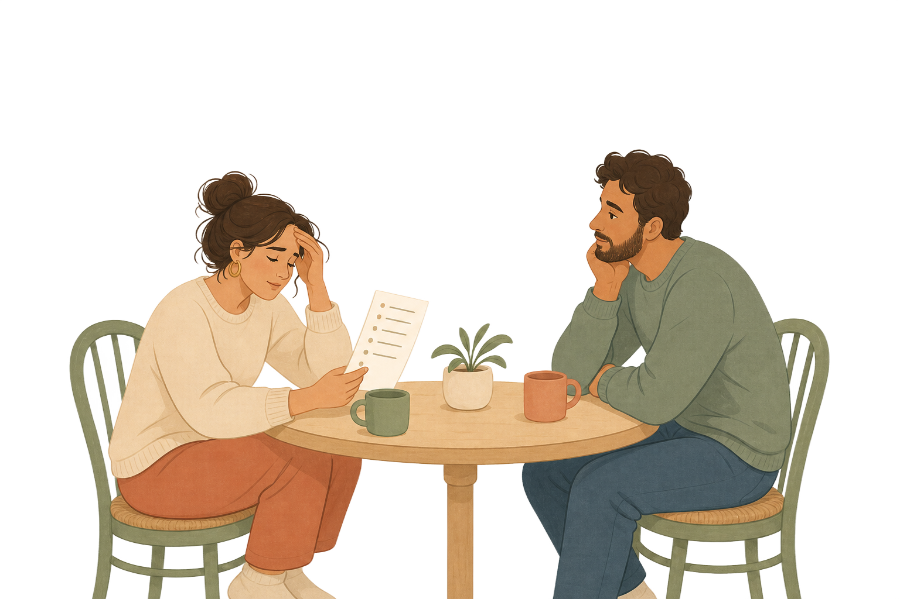
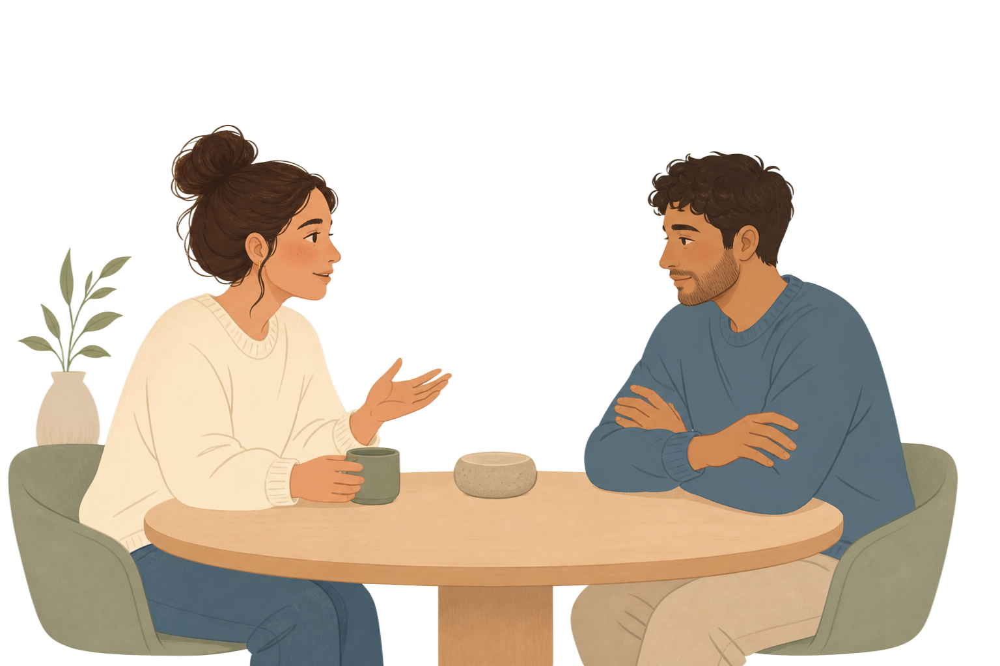
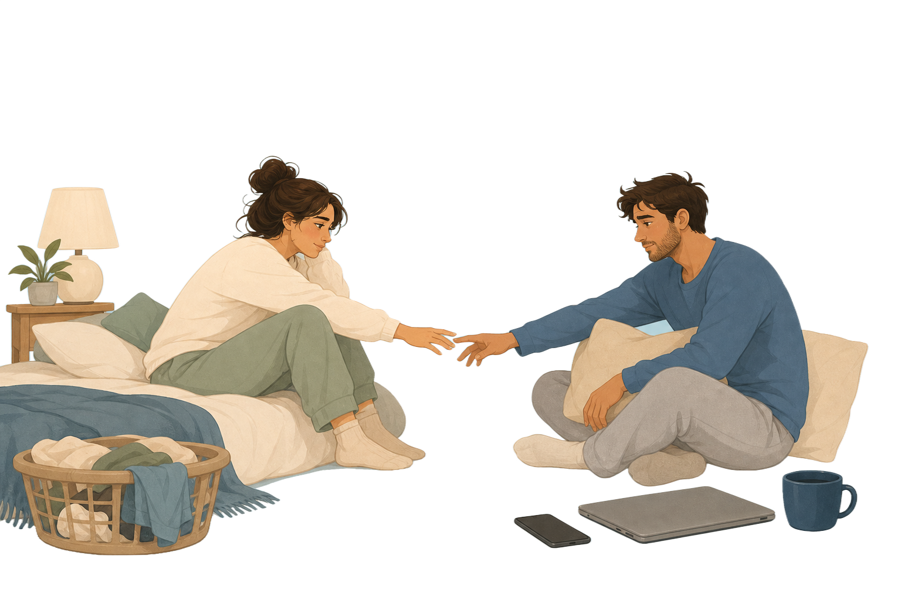

Tell it once
One of you starts by narrating the shared moment, without turning it into a debate.
Start with voiceEarly beta for couples
Sit together, tell the story out loud, add both perspectives, and find the need underneath.
One of you starts by narrating the shared moment, without turning it into a debate.
Start with voiceEach partner adds what felt important, missing, or misunderstood in the first version.
See examplesOren helps reveal the need underneath, so the next sentence has somewhere calmer to begin.
Join betaMental load
The story may start with calendars, errands, childcare, or social plans. When both people add their part, a logistics fight can become a clearer picture of invisible work.
Speak it through

Repair without blame
One partner may be naming a hurt while the other hears a verdict on their character. Oren helps separate the original pain from the fear of being the bad one.
Make space for bothCloseness under stress
What sounds like pressure about affection, phones, work, or bedtime can reveal stress, rejection, longing, and the wish to feel chosen again.
Find the need
How it works
One partner narrates the shared story out loud.
Both partners add what they felt, missed, or assumed.
Oren shows the misunderstanding and a next sentence.
Early access
For couples ready to understand the pattern, not win the fight.
FAQ
No. Oren is a spoken reflection tool for understanding.
It works best together. One person can start narrating, then both can add their part.
No. The goal is clarity, not a verdict.
Yes. Your conversations are treated with care and never shared without permission.